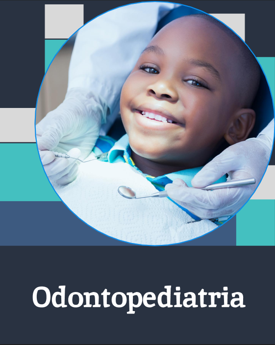
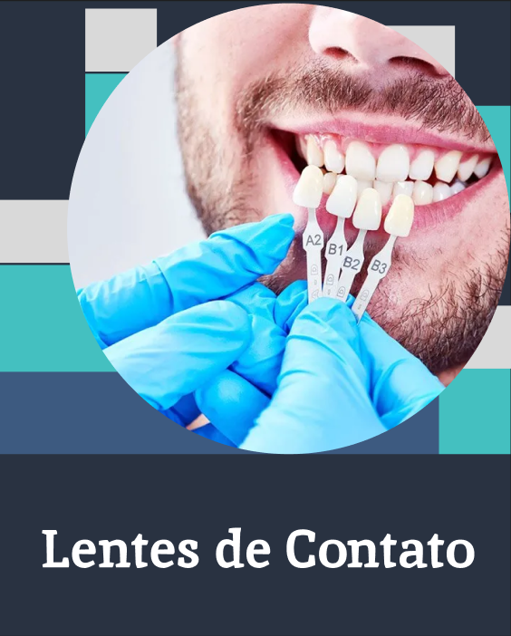
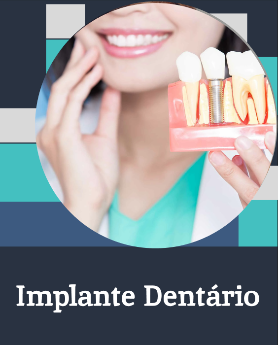
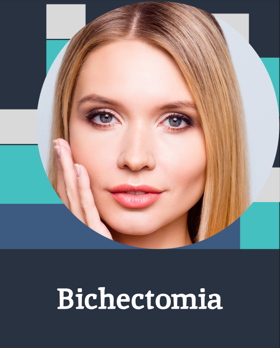
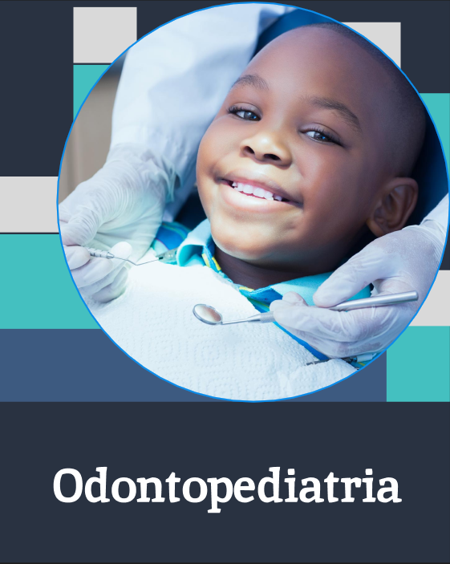
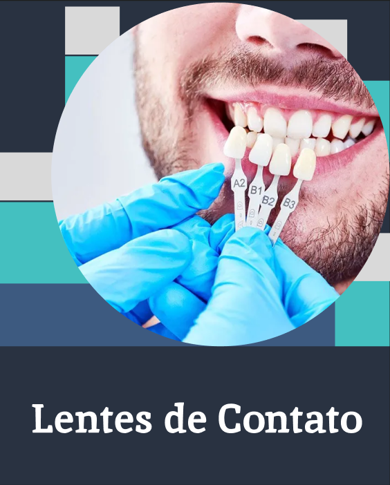
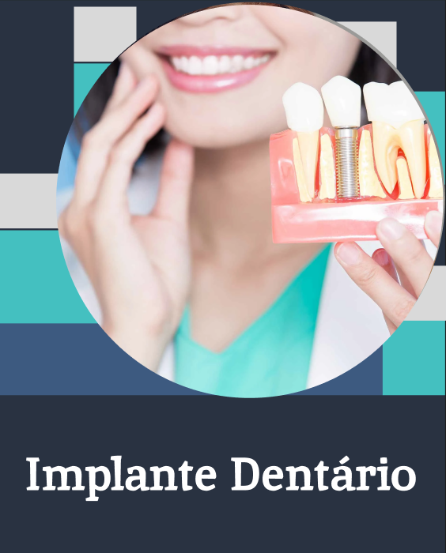
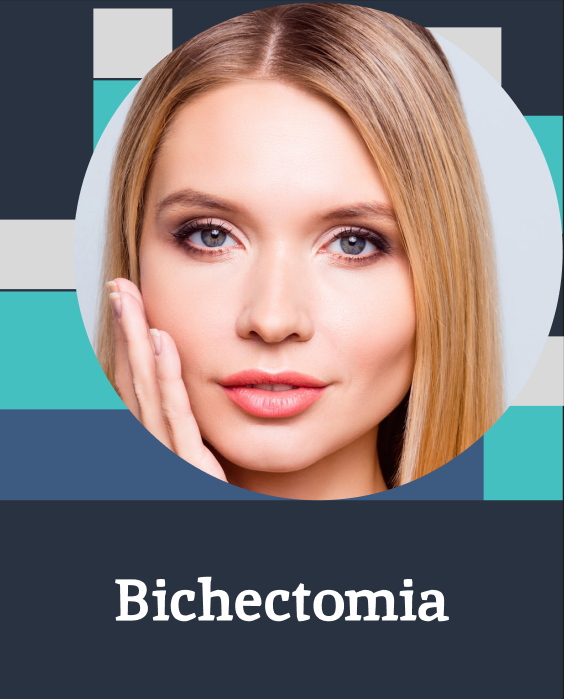

Profissionais
Nossos Serviços
Comentários
Profissionais
Nossos Serviços
Comentários


Nossos Profissionais!!

Graduado com distinção em Odontologia pela Universidade de São Paulo (USP), Dr. Martins consolidou
uma base sólida de conhecimento, prosseguindo para um mestrado em Odontologia Estética na mesma
instituição.
Com uma sólida formação acadêmica e um desejo contínuo de aprimoramento, Dr. Carlos Martins traz
consigo uma combinação única de conhecimento teórico e experiência prática em Odontologia Estética,
proporcionando aos seus pacientes a confiança de estar nas mãos de um profissional verdadeiramente
dedicado ao seu ofício.
Formada com distinção em Odontologia pela Universidade de São Paulo (USP), Dra. Martins solidificou
uma base sólida de conhecimento e avançou para um mestrado em Odontologia Estética na
mesma instituição.
Ao longo de sua formação, Dra. Camila destacou-se não apenas pela excelência acadêmica,
também por seu comprometimento com a pesquisa e inovação na área odontológica. Participou
ativamente de projetos de pesquisa, contribuindo para avanços significativos nas modernas técnicas
odontológicas.
 






